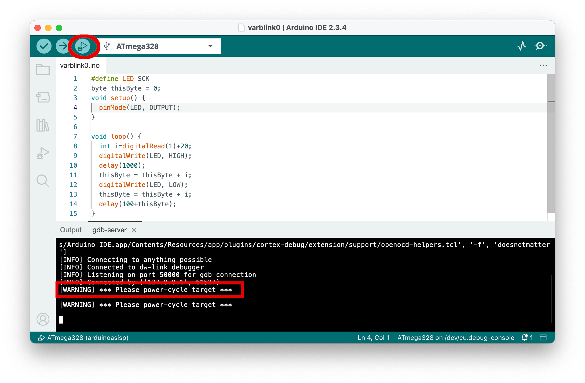
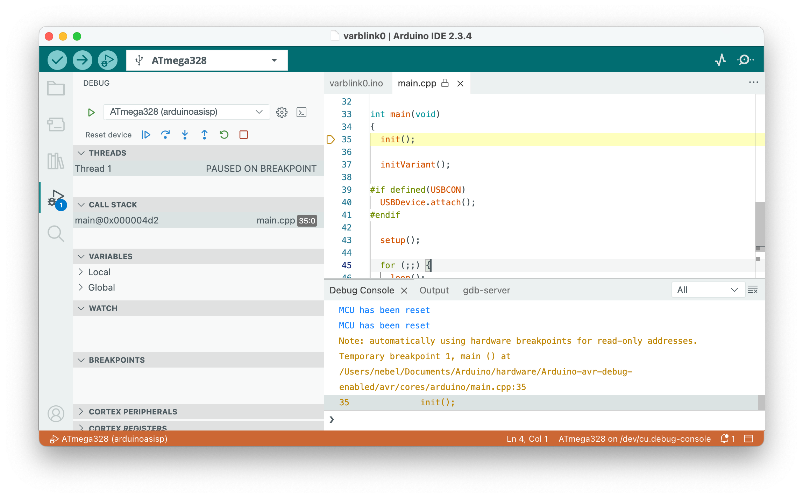
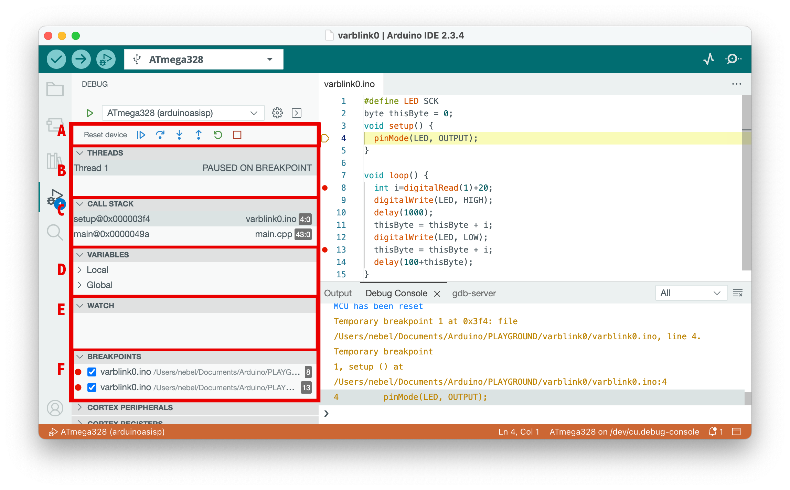
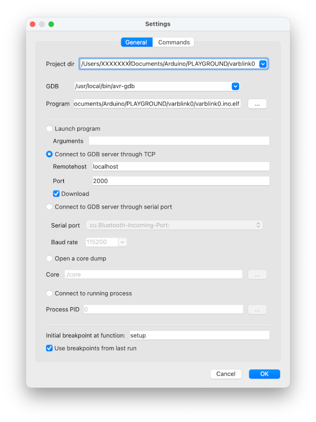
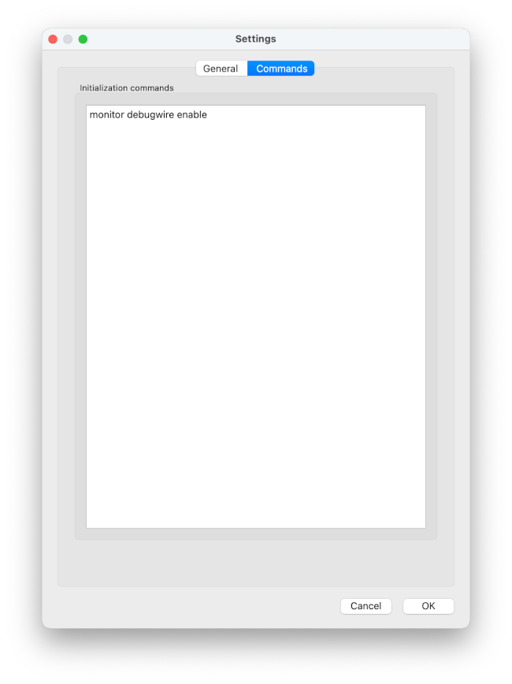
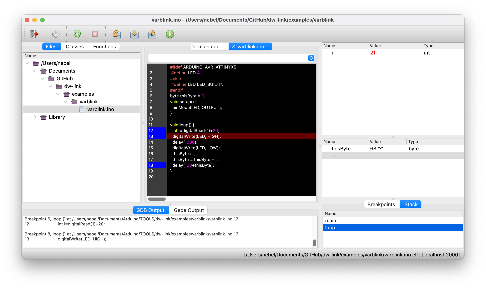

Debugging on a target
Debugging using the Arduino IDE 2
Before you start debugging, you first need to compile the sketch, preferably with the Optimize for Debugging option enabled.
Simulating or connecting to a target
Instead of connecting to a target, it is also possible to run a simulator (for some MCU types). This is done by choosing Simulator (simavr) as the Programmer in the Tools menu. When you request to start debugging (see below), the simulator is chosen instead of making a connection to the target board.
Starting the debugger
After compiling the sketch, it is time to start debugging by clicking the debug button in the top row. This will start the GDB server. If it does not start or exits prematurely, consult the troubleshooting section.

When you deal with a debugWIRE target, you may be asked to power-cycle the target, i.e., to disconnect and reconnect power to the target. Power cycling is only necessary once. The next time you start a debugging session, the MCU will already be in debugWIRE mode, and the GDB server will not stop at this point.
Eventually, execution is stopped on the first line of the internal main function at an initial internal breakpoint, indicated by the yellow triangle (not on Windows) left of line 35 in the following screenshot. It may take some time before we reach that point, as the debugger must also load the program.
After stopping, the IDE rearranges the layout, showing the debugging panes on the left and the sketch and other relevant source files on the right. It will also switch from displaying the gdb-server console to the Debug Console, which displays the output of the GDB debugger. In the last line of this console, a prompt symbol> is shown, where you can enter any GDB command, in particular, the monitor commands to control the GDB server.

Now is a good time to familiarize yourself with the window's layout. The source code is on the right side. Below that is a console window, and to the left are the debug panes. To set a breakpoint, click to the left of the line numbers. Such breakpoints are displayed as red dots, such as those located to the left of lines 8 and 13 in the picture below.

Debugging
The debugging panes are organized as follows (see picture above). Pane A contains the debug controls. From left to right:
- Resetting the device
- Continue execution or pause
- Step over: execute one source line
- Step into: execute stepping into the function, if one is called on this line
- Step out: finish the current function and stop after the line where it was called
- Restart: Same as Reset
- Stop: Terminate debugging
Pane B shows the active threads, but there is just one in our case. Pane C displays the call stack starting from the bottom, i.e., the current frame is the topmost. Note that by right-clicking on an entry, you can open a disassembly window for the current function.
Pane D displays variable values. Unfortunately, global variables are not shown if link-time optimizations are enabled, which is the default. Pane E can be populated with watch expressions, for example, with the names of global variables. Finally, in pane F, the active breakpoints are listed.
The panes below pane F are interesting if you are deep into the MCU hardware. The CORTEX PERIPHERALS pane displays I/O registers of the MCU and allows you to change the contents of these registers. The CORTEX REGISTERS pane displays the general registers.
Breakpoints
Breakpoints are arguably one of the most powerful tools when it comes to debugging. They allow you to break execution at every point and then inspect the state of your program or even change it. Afterward, execution can be continued.
As mentioned above, you can set and remove them by clicking to the left of the line numbers of the program listing in the editor window. In the BREAKPOINTS pane, you can additionally disable and enable single or all breakpoints. Further, you can modify their effect. When right-clicking on a breakpoint entry, you can select to edit the breakpoint, which permits you to modify breakpoints in various ways:
- You can turn the breakpoint into a logpoint meaning that at each hit, a log message in the
Debug Consoleis printed instead of breaking execution. The log message can have printf format, e.g.,"counter1=%d counter2=%d\n" cnt1 cnt2. Of course, this will slow down execution considerably. - You can add an expression to the breakpoint, turning it into a conditional breakpoint. At each breakpoint hit, the expression is evaluated, and only if true, execution breaks. This is much faster than doing such a thing manually. However, again, it slows down execution significantly because the stop and the evaluation of the expression will take time, usually around 50-200 milliseconds. If you think about a loop only doing a bit of basic arithmetic that iterates 1000 times, then an uninterrupted execution would take less than a second. With a conditional breakpoint, it is at least a minute.
- You can set a hit count, which specifies how often this breakpoint can be hit without a stop taking place. Again, this will slow down execution by roughly 50-100 ms for each breakpoint hit.
PyAvrOCD uses hardware breakpoints, those based on hardware comparators, and software breakpoints, where the BREAK instruction is programmed into flash memory. It will do so in a manner to minimize flash wear. However, you can control which kind of breakpoints are employed by using the monitor breakpoints command.
Peripherals pane
The CORTEX PERIPHERALS pane provides you with a view into all of the MCU's I/O registers. After opening one of the register groups by clicking, the content of the registers in that group will be shown, and the updated values are displayed after each execution stop. Changed values are highlighted as shown in the following picture.
Hovering with your mouse over a register or bitfield will provide you with extra information. Clicking on the pen allows you to change the register value or bitfield.
Correcting the bug and starting over
Let us assume you found the bug and made a correction in the source code. Note that it is not enough to restart or reset the device in order to try out the correction! This will only restart, but it will not compile and reload the program. Instead, do the following:
- Terminate debugging by clicking on the red square.
- Click again on the
Verifybutton to start a new compilation. - Restart the debugger by clicking on the
Debuggingbutton in the top line in order to try out your correction.
Finishing the debug session
If everything now works out, you may consider calling it a day and stopping work on the program. If you were debugging on a debugWIRE target, consider typing the command monitor debugwire disable into the last line of the Debug Console before terminating the debugger. This is necessary to bring the target chip back into normal mode, where it accepts SPI programming.
You may finally want to disable the Optimize for Debugging option in the Sketch menu. If you leave it enabled, then all future compilation actions will use this option and produce much larger code than necessary.
Debugging using Arduino Maker Workshop
Since Arduino IDE 2 and the Arduino Maker Workshop use the same underlying technology, namely, Visual Studio Code and Cortex-Debug, everything written above applies. The UI is organized in a somewhat different way, however. But it should be easy to find your way around.
Debugging using PlatformIO/VSCode
Debugging a program/sketch in PlatformIO/VSC is very similar to doing the same thing in the Arduino IDE 2. The reason is that both IDEs are based on VS Code. The control of changing the focus between windows is a bit different, however. Under PlatformIO, it may be necessary to select the DEBUG CONSOLE manually after debugging is started. Further, after the initial stop in the main function, it may be necessary to open the sketch file through the explorer. Otherwise, the description of how to debug in the Arduino IDE 2 describes things very well.
Debugging using Gede
Gede is a lean and clean GUI for GDB. It can be built from source and run on almost all Linux distros, FreeBSD, and macOS. You need an avr-gdb client with a version greater than or equal to 10.2. If you have installed Gede somewhere in your PATH, you can start Gede by specifying the option --start gede or -s gede when starting PyAvrOCD.

Project dir and Program are specific to your debugging session. The rest should be copied as it is shown. Before you click OK, you should switch to the Commands section, where you need to enter the command monitor debugwire enable if you are working with a debugWIRE target.

Clicking on OK, you start a debugging session. The startup may take a while because the debugger always loads the object file into memory. After a while, you will see a window similar to what is shown below.

Debugging with a command-line interface
If you are more into command-line interfaces, simply using avr-gdb may be the right approach for you.
After compiling your program, e.g., varblink0.ino, you can start the GDB server and the GDB debugger. When starting the GDB server from the command line, you need to specify the MCU you want to connect to. In addition, you should specify the option -m all so that the GDB server manages the debug-related fuses (see Setting the right fuses):
$ pyavrocd -d atmega328p -m all
[INFO] This is PyAvrOCD version 1.5.1
[INFO] Connected to mEDBG CMSIS-DAP, SN: ATML2323052700011010
[INFO] Starting GDB server
[INFO] Looking for device atmega328p
[INFO] Nvm instance created, iface: debugwire, HWBPs: 1, arch: avr8
[INFO] Managing fuses: bootrst, dwen, lockbits
[INFO] Listening on port 2000 for gdb connection
In another terminal window, you can now start a GDB session:
$ avr-gdb varblink0.ino.elf
GNU gdb (GDB) 15.2
Copyright (C) 2024 Free Software Foundation, Inc.
...
(gdb) target remote :2000
Remote debugging using :2000
0x00000000 in __vectors ()
(gdb) monitor debugwire
debugWIRE mode is disabled
(gdb) monitor debugwire enable
*** Please power-cycle the target system ***
Ignoring packet error, continuing...
debugWIRE mode is enabled
(gdb) load
Loading section .text, size 0x596 lma 0x0
Start address 0x00000000, load size 1430
Transfer rate: 1 KB/sec, 1430 bytes/write.
(gdb) break loop
Breakpoint 1 at 0x470: file /Users/.../varblink0.ino, line 13.
Note: automatically using hardware breakpoints for read-only addresses.
(gdb) continue
...
In the above dialog, note the request to power-cycle the target system, which will only appear when dealing with debugWIRE targets. You then need to disconnect and reconnect the power to the target. Afterward, debugWIRE mode is enabled, and you can debug.
The debugWIRE mode will not be disabled when you leave the debugger! It will only be disabled when you issue the command monitor debugwire disable. This means that until then, the RESET button will not be of any use; you cannot upload anything using SPI programming, nor can you change fuses. Since PyAvrOCD often deletes the bootloader as well (in order to clear the lock bits), you also cannot upload anything over the serial line.
Inspecting I/O registers
If you have reached this point, I trust that you are familiar with GDB and know how to proceed. I should point out one very convenient command, however: monitor ioregister <ioreg-expression> [<int>]. It will output the descriptions and contents of the I/O registers and/or bitfields that are referred to by <ioreg-expression>. This is a wildcard, case-insensitive expression over the names of the I/O registers and bitfields using the notation [<peripheral>.]<register>[.<field>], as shown below.
...
(gdb) monitor ioregister *int*
EXINT.EICRA (@0x800069, 8-bits) = 0x0, 0b0, 0 (External Interrupt Control Register)
EXINT.EIFR (@0x80003C, 8-bits) = 0x0, 0b0, 0 (External Interrupt Flag Register (read-only for debugger))
EXINT.EIMSK (@0x80003D, 8-bits) = 0x0, 0b0, 0 (External Interrupt Mask Register)
EXINT.PCICR (@0x800068, 8-bits) = 0x0, 0b0, 0 (Pin Change Interrupt Control Register)
EXINT.PCIFR (@0x80003B, 8-bits) = 0x0, 0b0, 0 (Pin Change Interrupt Flag Register (read-only for debugger))
EXINT.PCMSK0 (@0x80006B, 8-bits) = 0x0, 0b0, 0 (Pin Change Mask Register 0)
EXINT.PCMSK1 (@0x80006C, 8-bits) = 0x0, 0b0, 0 (Pin Change Mask Register 1)
EXINT.PCMSK2 (@0x80006D, 8-bits) = 0x0, 0b0, 0 (Pin Change Mask Register 2)
(gdb)
If the expression denotes a single register, all its bitfields will be displayed as well.
...
(gdb) mo io eicra
EXINT.EICRA (@0x800069, 8-bits) = 0x0, 0b0, 0 (External Interrupt Control Register)
EXINT.EICRA.ISC0 (@0x800069[1:0]) = 0x0, 0b0, 0 (External Interrupt Sense Control 0 Bits)
EXINT.EICRA.ISC1 (@0x800069[3:2]) = 0x0, 0b0, 0 (External Interrupt Sense Control 1 Bits)
(gdb)
If the expression denotes a unique bitfield, possible values will be displayed (if present in the SVD file).
...
(gdb) mo io eicra.isc0
EXINT.EICRA.ISC0 (@0x800069[1:0]) = 0x0, 0b0, 0 (External Interrupt Sense Control 0 Bits)
0: LOW_LEVEL_OF_INTX (Low Level of INTX)
1: ANY_LOGICAL_CHANGE_OF_INTX (Any Logical Change of INTX)
2: FALLING_EDGE_OF_INTX (Falling Edge of INTX)
3: RISING_EDGE_OF_INTX (Rising Edge of INTX)
(gdb)
If you specify an integer in addition, this will be used to set the value of the register or bitfield if uniquely described by <ioreg-expression>. This could look like this.
...
(gdb) mo io eicra.isc0 3
EXINT.EICRA.ISC0 = 3 (old value was: 0)
(gdb)
Structured UIs
In addition to the command-line interface, GDB also supports more structured user interfaces. The Text User Interface, or TUI, is one of them. In order to use it, GDB has to be compiled with TUI enabled. Another very nice text-based interface is gdb-dashboard. A setup for debugging an AVR chip with gdb-dashboard is described here. For this, the GDB client needs to be compiled with Python support.
Note that the GDB binaries shipped with PyAvrOCD do not support Python. And TUI is only compiled in on Linux and macOS. So, you have to look somewhere else for a GDB client. If you do this, this means that for some Microchip MCUs, debugging will not work.